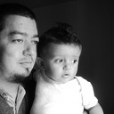
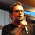

Completo, não complexo
O RD Station é uma plataforma de marketing digital destinada a ajudar médias e pequenas empresas a gerar resultados de negócio de maneira incremental e consistente.
Alguns de nossos clientes
-

"Antes do RD Station, nossas ações de Marketing Digital se resumiam basicamente em campanhas no Google Adwords. Hoje temos uma plataforma muito mais ampla e redonda para atrair e converter potenciais clientes, e conseguimos analisar todo o histórico deles para saber o que funciona bem para nós."Flávio Logullo - Granatum
-
"O uso do RD Station hoje faz parte do dia-a-dia dos times de Marketing e Comercial do Beefpoint. A facilidade de criar boas Landing Pages e gerar Leads qualificados para nós e nossos clientes teve um impacto significativo no nosso negócio."Miguel Cavalcanti - BeefPoint
-
"Na Clear já tínhamos boa experiência e sempre acreditamos muito no Marketing Digital, mas era difícil colocar a casa em ordem com a correria do dia-a-dia. O RD Station nos ajuda muito por reunir as diferentes ferramentas de forma integrada em um só lugar, e a metodologia da RD tem sido um ótimo norte para priorizarmos os próximos passos."Fernanda Bornhausen Sá - Clear Educação e Inovação
-

"Investimos bastante em conteúdo e Marketing Digital na SOAP, e os relatórios e alertas do RD Station me ajudam a ter uma rápida visão de como tudo está se convertendo em números e melhora na nossa marca. Além disso, sempre temos alguém da equipe RD para nos ajudar. Eles vão além e entendem que a relação com o cliente não é comercial mas sim estratégica."Joni Galvão - SOAP